Social Insurance in China for Foreign Employees (2026): Structure-First Guide for International Employers
Overview
For international employers, social insurance in China is best understood as a three-layer topic: national legal baseline, local administrative practice, and payroll execution controls. The legal framework establishes the direction, but operational quality determines whether monthly runs stay compliant and predictable.
The national baseline
China’s labor and social insurance framework provides the core obligation structure for employment relationships, including foreign employee scenarios handled in local operations. For employers, this means social insurance should be treated as a default compliance domain in workforce planning, payroll setup, and HR onboarding design.
Why local practice still matters
Although national principles are clear, practical processing remains local. Employers usually see variance in:
- filing rhythm and processing speed,
- documentary expectations and formatting details,
- handling of non-standard or exception pathways,
- communication pressure when deductions differ from employee expectations.
This is why multinational teams should avoid a single static assumption for all locations.
Practical interpretation model
A useful sequence for decision-making is:
- Confirm national baseline and obligation scope.
- Validate city-level process assumptions for the specific case.
- Check documentary readiness before payroll lock.
- Separate standard handling from exception handling.
- Complete filing, reconciliation, and evidence archive in-cycle.
Situation map for employers
| Layer | Main question | What good control looks like |
|---|---|---|
| Legal baseline | What is the obligation framework? | One consistent policy interpretation baseline |
| Local administration | How is this processed in this city? | Location-aware SOP and timeline planning |
| Payroll execution | Can this be completed before cutoff? | Pre-run checks + post-run reconciliation |
| Evidence | Can the decision be defended later? | Decision logs, approvals, filing receipts |
Risk signals to monitor monthly
| Signal | What it indicates | Suggested response |
|---|---|---|
| Growing pre-run exception queue | Late data or unclear ownership | Escalate earlier and tighten D-3 controls |
| Missing-document recurrence | Weak onboarding or handoff quality | Add document quality gate before run lock |
| Reconciliation deltas | Parameter or process drift | Increase simulation discipline and owner review |
| Deduction disputes | Communication timing gaps | Pre-payroll employee notice and FAQ scripts |
Employer operating response
Standard lane
- Confirm employee type and city mapping.
- Validate required records and filing readiness.
- Run simulation and lock assumptions.
- Execute filing and archive evidence package.
Exception lane
- Require decision-grade supporting documentation.
- Route through payroll + compliance approval.
- If unresolved at cutoff, apply default handling and queue correction.
- Communicate rationale clearly to employee and manager.
Common mistakes to avoid
- Treating legal understanding as sufficient for operational success.
- Assuming exception pathways are automatic once identified.
- Communicating payroll outcomes too late in the cycle.
- Keeping weak links between decision, filing, and reconciliation evidence.
Related guide nodes
- Social Insurance 5 versions index: https://jmcun777.github.io/blog-writer/dist/2026-02-24-social-insurance-versions/
- Operator Playbook: https://jmcun777.github.io/blog-writer/dist/2026-02-24-social-insurance-versions/2026-02-24-china-social-insurance-for-foreign-employees-2026-operator-playbook-for-hr-and-p/
- Compliance Checklist: https://jmcun777.github.io/blog-writer/dist/2026-02-24-social-insurance-versions/2026-02-24-china-social-insurance-for-foreign-employees-2026-compliance-checklist-for-in-ho/
- Risk Control Framework: https://jmcun777.github.io/blog-writer/dist/2026-02-24-social-insurance-versions/2026-02-24-2026-risk-control-framework-social-insurance-for-foreign-employees-in-china/
FAQ
Is the challenge mostly legal interpretation?
For many foreign employers, the larger challenge is operational consistency across city process, documentation, and payroll timing.
Why do issues repeat even with experienced teams?
Because timing control and documentation quality are often weaker than policy interpretation quality.
What should leadership review each month?
Exception closure SLA, reconciliation variance trend, missing-document ratio, and deduction-related dispute volume.
Sources
- Social Insurance Law of the PRC (NPC): http://www.npc.gov.cn/zgrdw/englishnpc/Law/2009-02/20/content_1471106.htm
- Labor Contract Law of the PRC (NPC): http://www.npc.gov.cn/zgrdw/englishnpc/Law/2007-12/13/content_1384064.htm
- PwC Worldwide Tax Summaries (PRC): https://taxsummaries.pwc.com/peoples-republic-of-china/individual/other-taxes
Need local employment support in China?
If you need a compliance-first partner for hiring, payroll, and risk controls in China, China-Payroll.com can help evaluate the right setup.
Image Prompt Pack
Create a 16:9 hero image for article title: 'Social Insurance in China for Foreign Employees (2026): Structure-First Guide for International Employers'. Scene: finance and payroll operations team reviewing contribution base dashboards in a modern office. Inclu…